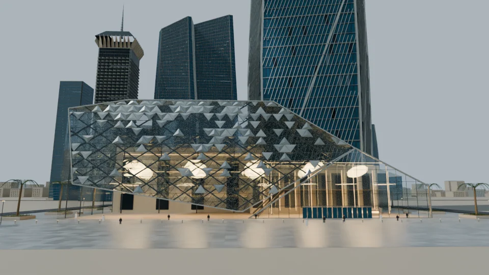

Faceted foreground facade
The preview shows a faceted foreground building, large glass openings, small scale figures and a layered tower backdrop.
A low architectural form against a vertical skyline.
Explore the story
Emphasize the relationship between a faceted building and its taller surroundings.
Triangular facade members and panes define the foreground. Illuminated interior forms and glass towers give the procedural visualization depth and scale.
The preview shows a faceted foreground building, large glass openings, small scale figures and a layered tower backdrop.
The view brings the triangular façade and large illuminated interior forms into the foreground, with vertical towers establishing scale behind it.
Explore the complete compositions and interface states. Select any image for a closer look.
Structure, interaction and visual decisions that give the work its character.
RoleConfirm composition, scene direction, procedural development, material work, lighting and rendering.
AssetsThe source’s own originality statements do not establish personal authorship. Credit architectural and photographic references, collaborators and assisted scripting; verify imported dependencies independently.
StatusArchitectural visualization and selected procedural source reviewed; exact personal contribution and survey accuracy unverified.